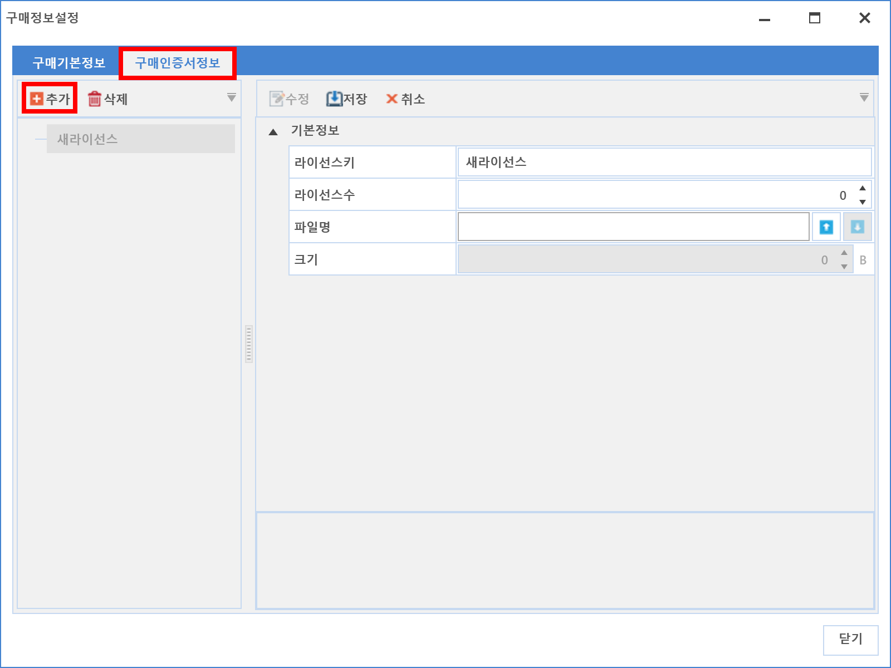

5-1-1-1. 소프트웨어 라이선스 구매 등록
5-1-1-1. 소프트웨어 라이선스 구매 등록
Source: https://www.sweeper.or.kr/etc/manual/5111.html
5-1-1-1. 소프트웨어 라이선스 구매 등록
5. 소프트웨어 ›› 5-1. 자산관리 ›› 5-1-1. 라이선스 ››


라이선스 구매내역을 등록하고 편집할 수 있으며, 구매한 소프트웨어를 사용자에게 할당할 수 있습니다.

소프트웨어 구매 등록 방법
-
추가 버튼을 클릭합니다.
-
구매한 SW 정보들을 입력 합니다.
-
라이선스 할당을 위해서는 "소프트웨어명"을 찾아 매핑해야 합니다.
-
(참고) 한번 매핑 후 저장하면, 소프트웨어명을 수정할 수 없습니다.

-
기업에서 구매한 인증서가 있는 경우, 해당 내용을 저장할 수 있습니다.
-
왼쪽 추가 버튼을 클릭합니다.

- 라이선스 키, 라이선스 수량, 파일명을 설정한 후 저장 버튼을 클릭합니다.

- 완료되면 라이선스 정보가 제목이되어 등록됩니다.
참고사항 1
사용자에 라이선스 할당을 위해서는, 소프트웨어 라이선스 구매 등록시 SWDB와의 매핑이 필요합니다.
한번 구매 등록후에는 수정을 통해 구매 수량을 변경할 수 없으나, 5-1-1-2. 소프트웨어 리소스 생성 확인 에서 우클릭 명령으로 추가/삭제가 가능합니다.
참고사항 2
구매인증서정보 추가시 설정한 파일은 다운로드가 가능합니다.

참고사항 3
등록 가능한 구매 인증서 파일 크기는 최대 20MB 입니다.
© Copyright SWeeper Inc.. All Rights Reserved